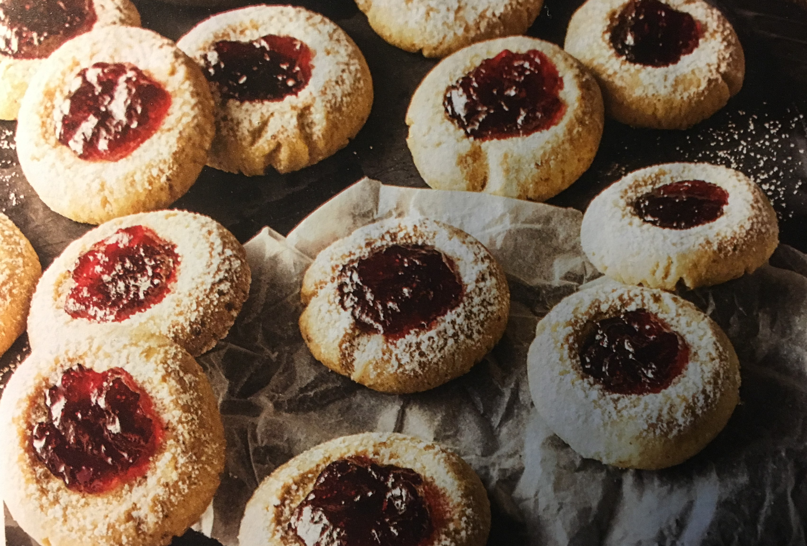

Kedvencem: Huszárcsók

Hozzávalók:
- 200g teavaj(hideg)
- 300g finomliszt
- 80g őrölt mandula 2 darab
- tojás sárgája
- 100g kristálycukor
- 1 csomag vanillincukor
- egy csipet tengeri só
- enyhén savanykás ízű lekvár (pl. málnalekvár)
- porcukor (a díszítéshez)
Elkészítés:
- A vajat nagyobb darabokra vágjuk. A porcukor és a lekvár
kivételével a többi hozzávalóból tésztát gyúrunk.
- A munkalapot liszttel
megszórjuk és a tésztából vastag hengert készítünk.
- A hengert kis darabokra
vágjuk, amelyekből golyókat formálunk.
- A golyókat sütőpapírral bélelt
sütőlemezre helyezzük, a kezünkkel enyhén lelapítjuk őket, majd az ujjunkkal
kis mélyedést nyomunk mindegyikbe.
- 180 °C fokos sütőben kb. 20 perc alatt
aranybarnára sütjük.
- A lekvárt a mélyedésekbe töltjük, és amint a kekszek
kihültek, porcukorral meghintjük őket.
kb.70perc
@2020 OnePage - TwoDays Common Web Development